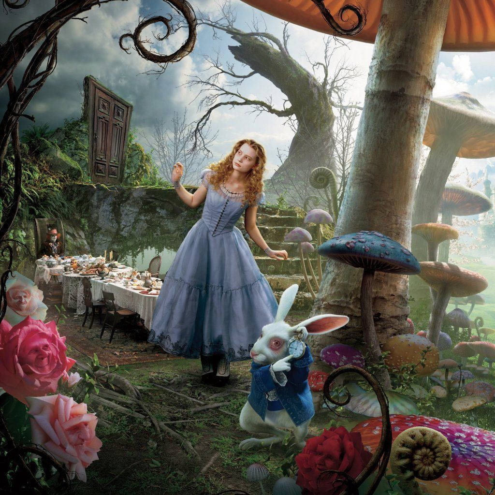
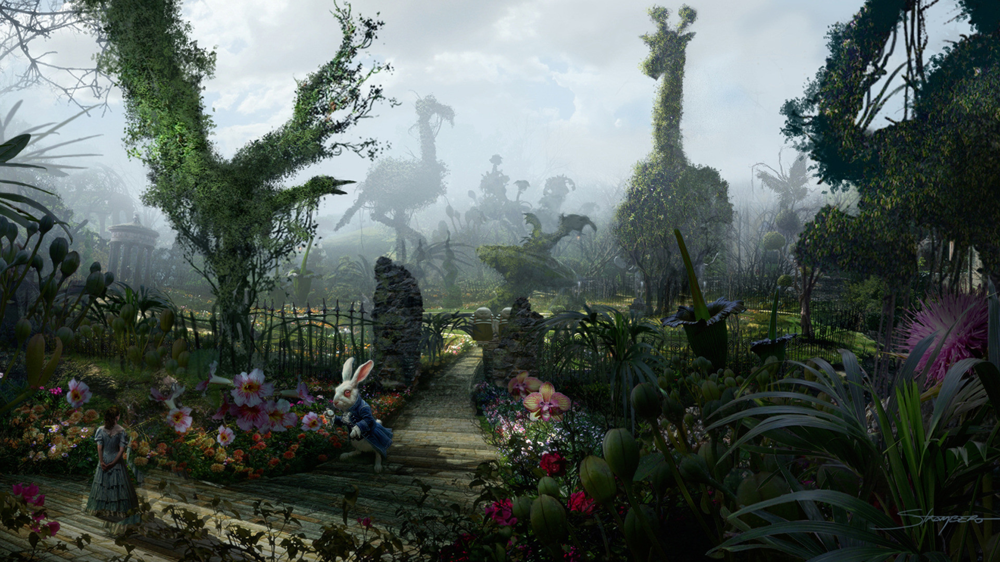
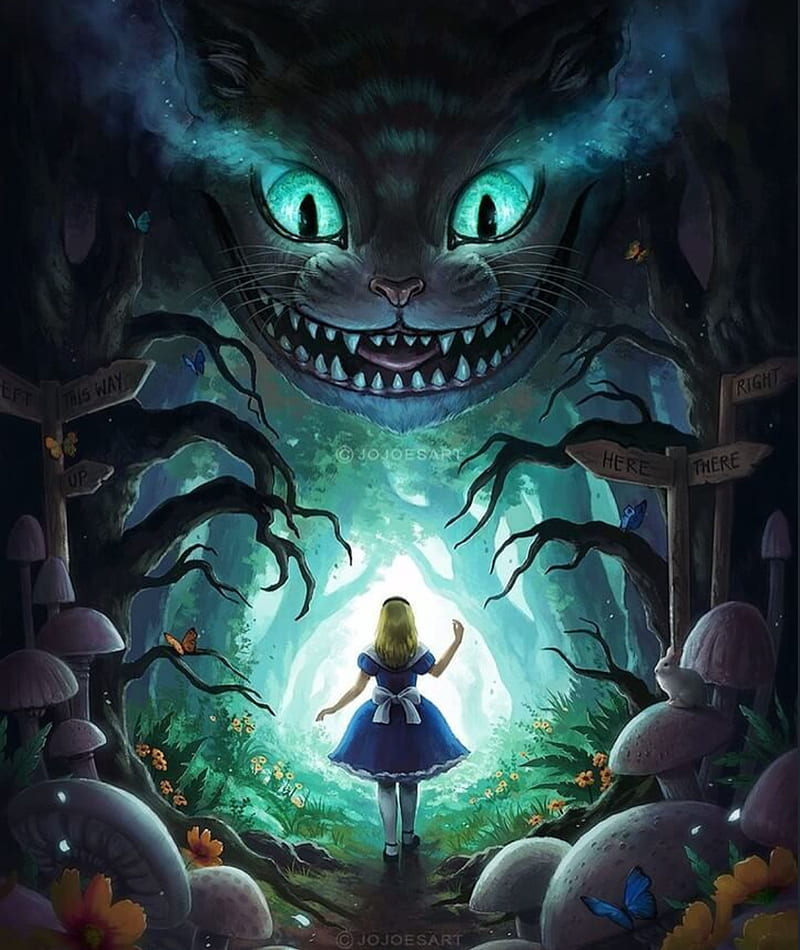
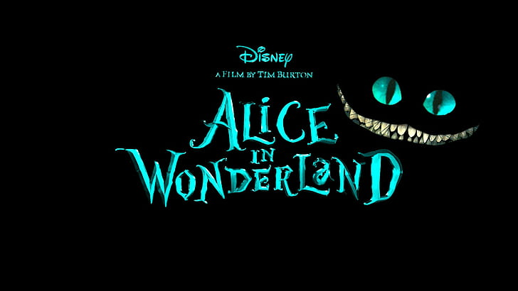
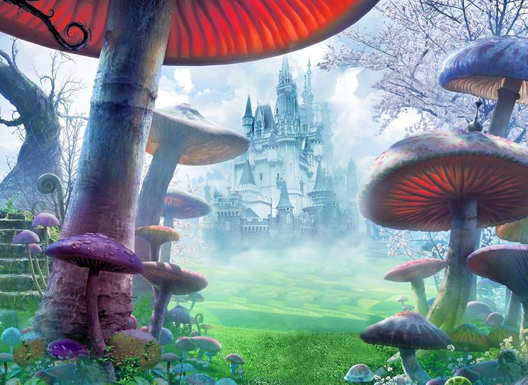

Un recorrido, tan vertiginoso como caer por la madriguera del conejo, por cuatro grietas que están definiendo el siglo XXI: conflictos armados, crisis ambiental, salud mundial y nuevas tecnologías. Cuatro puertas distintas, una misma encrucijada.
El tablero donde la geopolítica decide quién gana y quién pierde.



El País de las Maravillas también se está derritiendo, como el reloj de Dalí.

"¿Estás loco?" "Probablemente, pero el mundo entero también lo está últimamente."


"Eres tan distinta a como te imaginaba" — el siglo XXI, sobre el futuro que prometieron.